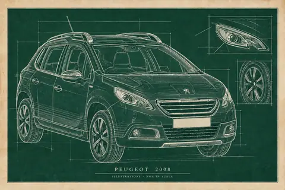
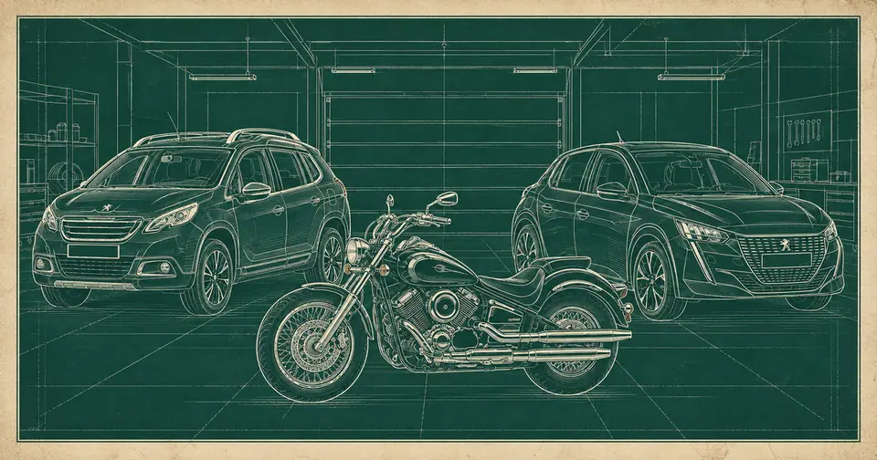
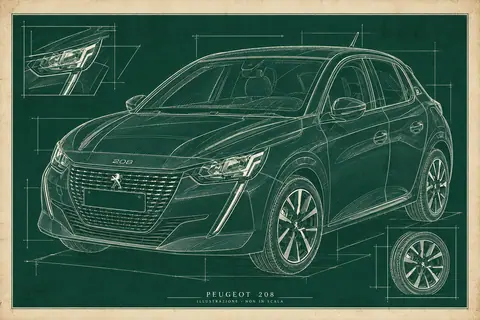
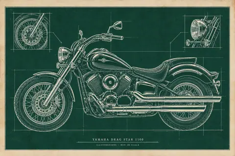

Mezzi
Schede tecniche, dati e verifiche raccolti per tre mezzi.



BH79954
Yamaha Drag Star 1100
Immatricolazione 2003 da Veicolo Android; variante esatta da verificare.
Scrivi almeno due caratteri.
Schede tecniche, dati e verifiche raccolti per tre mezzi.




BH79954
Immatricolazione 2003 da Veicolo Android; variante esatta da verificare.
Pagina 1 di 1